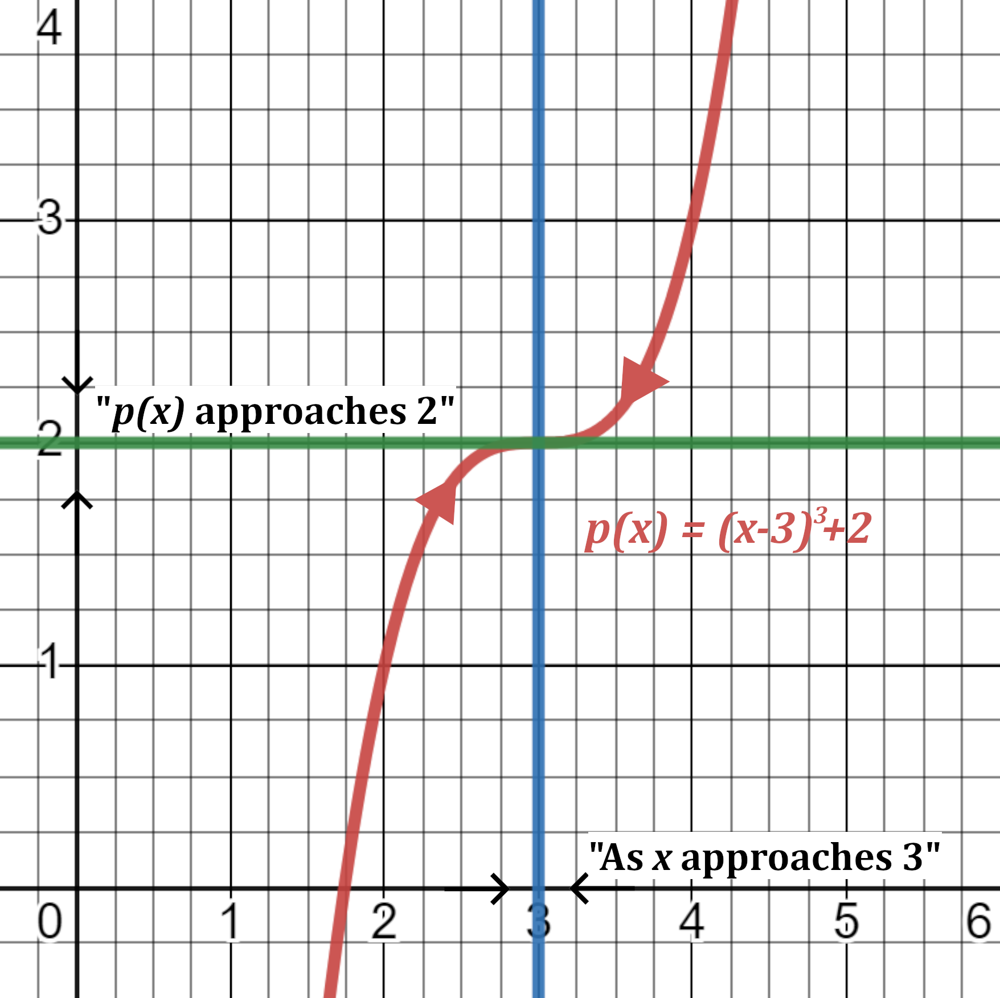
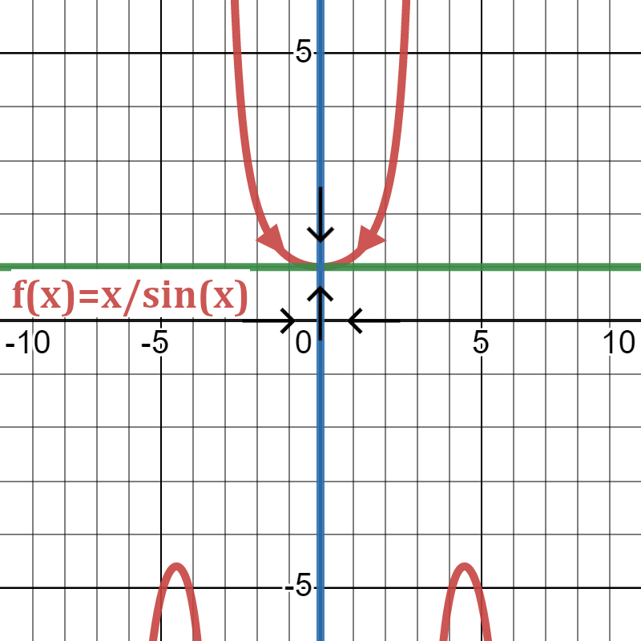

The study of calculus revolves around the concept of a limit of a function.
The limit of a function is the value the function approaches as the input value, \(x\),
approaches a designated value. The notation of a limit generally looks like the following:
\[\lim_{x\to\alpha} f(x)=\beta\]
and is said "the limit of \(f(x)\), as \(x\) approaches \(\alpha\), is equal to \(\beta\)."
The strict and precise definition of a limit is that if \(\lim_{x\to\alpha} f(x) = \beta\)
then for any number \(\epsilon\) however small, it must be possible to find a number \(\omega\)
such that \(\lvert f(x)-\beta\rvert<\epsilon\) whenever \(\lvert x-\alpha\rvert<\omega\).
In other words, the values of \(f(x)\) tend to get closer to \(\beta\) as \(x\) gets closer to the
value \(\alpha\) (from either side of \(\alpha\)), however, \(x\neq\alpha\) and by extension \(\omega\neq 0\).
To get a better understanding of a limit, let's investigate the behavior of the function \(p\)
defined by \(p(x)=(x-3)^3+2\) for values of \(x\) near \(3\):
The table shows the values of \(x\) approaching \(3\) from the left and values approaching from the right.
We see that when \(x\) is close to \(3\), on either side of \(3\), \(p(x)\) approaches 2. Thus,
the limit of \(p(x)\) as \(x\) approaches \(3\) is equal to \(2\). On a graph, this is what we're generally
looking at:

In many cases, the limit of the function as \(x\) approaches \(\alpha\) will simply be the value \(f(\alpha)\), but
this is not always true. Take, for example, the following function,
\[f(x) = \frac{x}{\sin(x)},\]
the function takes the value of \(\frac{0}{0}\) when \(x=0\), an undefined result. Yet, if we look at the graph of the function
\(f(x)\) below,

we see that the limit of \(f(x)\) as \(x\) approaches \(0\) is equal to \(1\).
Ultimately, we find that if the function is undefined at \(x=\alpha\), the limit of the
function as \(x\) approaches \(\alpha\) will not be equal to the value of \(f(x)\).
Additionally, even if the function is defined at \(x=\alpha\), a discontinuous function will
also lead to inconsistencies at a point of discontinuity. [This is dicussed further in the next section].
Before we look at an example of a discontinuous function, let's go over a bit of new notation:
\[
\begin{gather*}
\lim_{x\to\alpha^+} f(x)=\beta_1 \text{ (right-hand limit)}, \\
\lim_{x\to\alpha^-} f(x)=\beta_2 \text{ (left-hand limit)},
\end{gather*}
\]
where \(\beta_1\) may or may not be equal to \(\beta_2\). The difference between these expressions
and the notation from the beginning of the section is that the value \(x\) is approaching, \(\alpha\),
now has a \(+\) or \(-\) as an exponent. All this is telling us is which direction we are approaching
the value \(\alpha\) from. When the limit has a \(+\) that indicates that we are only looking for the
value as we approach from the right hand side, i.e. \(x>\alpha\), and when the limit has a \(-\) it means we are only looking
as we approach only from the left hand side, i.e. \(x<\alpha\). So, whereas before we would be looking from both sides of the
\(x\) value, we are now only considering one.
Before continuing on to an example, we feel it is important to reiterate these main points: